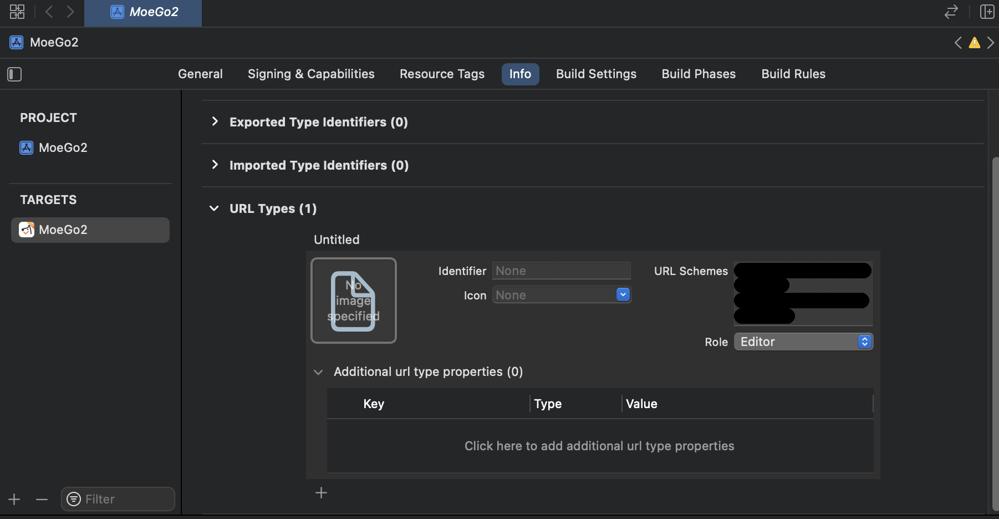
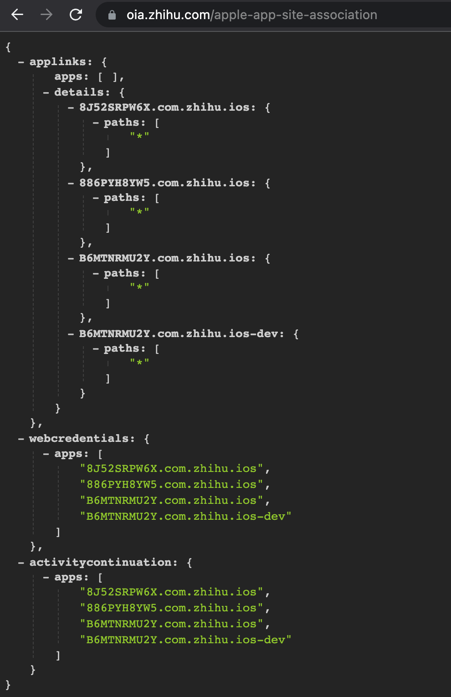
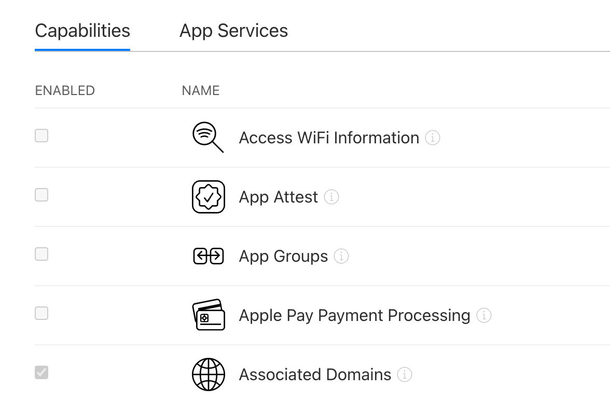
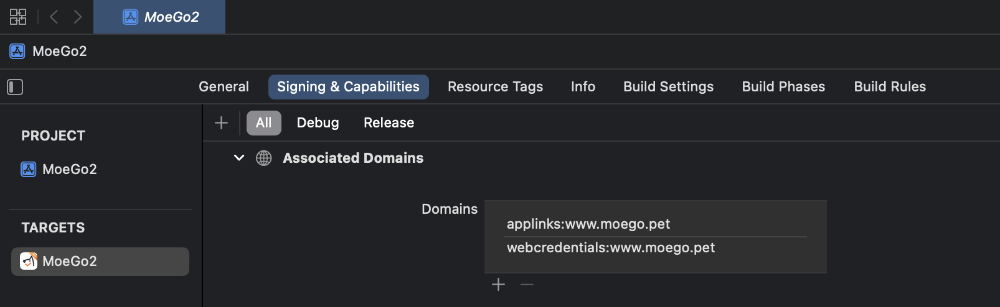

令人头疼的唤端。
之前有个需求，想要做一个 Landing Page，避免用户注册完一头雾水地跳转到日历页。因为日历页面在 mobile 情况下展示不全，所以更好的用户体验得去 App。那最后就在 Landing Page 添加了一个跳转按钮，希望能够在已安装 App 的情况下打开 App，没有安装 App 的情况下跳转至 Apple Store / Google Play。
研究了几天，发现 App 如何支持唤端的文档还蛮明确，但 H5 -> App 这个过程的实践和描述没什么文档，导致一头雾水了一会儿。在捣鼓一圈后发现 Tech Lead 以前就给 App 支持了某个链接的 Universal Link（笑
引言
唤端的核心其实是 webpage 和各 App 之间的简单通信，双方约定好固定的协议，配置好对应的逻辑，再加上 Apple / Google 的支持，理论上就可以通过 webpage 丝滑地唤起 App 了。至于实践，包括用户体验或好或坏的几种：URL scheme、Deep Link (包括 iOS 的 Universal Link 和 Android 的 App Link)。
但上面只说了「唤起 App 的情况」，我们的诉求还有一项是「Webpage 判断是否安装 App」，这个怎么解决呢？🈚️，目前都是一些 hack，参考。配合上面三种方式来说，URL scheme 会用 setTimeout 的 hack；而 Deep Link 如果配置好的话，那个指定的链接会自带这个判断，跳转该链接后的逻辑是「如果安装就唤起 App 并停留在当前页，否则跳转至这个链接对应的 webpage」。
下面仔细记录下该如何实践。
URL Scheme
简述
这个就是最常见的类型，像我们想通过 iOS 的快捷方式打开粤康码的地址是 weixin://dl/business/?t=QDZVQEO2z9f，这个链接就是一个 URL Scheme，其中 weixin:// 是把 App 注册的唯一标识作为协议头，而后面那一段就是 App 自己设置的路径了，App 内对其进行解析就能跳到特定的 App 页面。常见的比如 mailto:// 会唤起设备上的 mail 、sms:// 会唤起设备上的 message；或者一些常见的应用 weixin://、mqq://、zhihu:// 等。
注册
iOS
iOS 官方文档 here。
用 Xcode 打开项目，在 Targets -> Info -> URL Types 里填写一个。这里没有固定的一个规范和要求，官方建议是用倒置域名(reverse DNS string)，如果填写的内容已经注册过了，那么无法知道会打开哪个应用，同时官方也没有一个地方可以查询某个串是否已经被注册过了，全靠自己的本领hh，参考。

这个的结果是会在项目的 ios/AppName/Info.plist 里配置一个 <string> 如下，自动生成的 xml 文件就不看具体结构了，也看不懂。
1 | <dict> |
Android
Android 官方文档 here。
应该是在项目的 android/app/src/main/AndroidManifest.xml 里配置一个 <indent-filter>，依旧是看不懂的配置，差不多如下。
1 | <application> |
应用内声明支持
看 React Native 官方文档吧，大概就是下面几个文件的修改。
iOS
1 | // ios/AppName/AppDelegate.m |
Android
把对应 <intent-filter> 所写入的 <activity> 的 launchMode 设置为 singleTask。
1 | <!-- android/app/src/main/AndroidManifest.xml --> |
应用内处理逻辑
iOS 和 Android 用的 React Native API 一样。
1 | import { Linking } from 'react-native'; |
问题
我们没有办法判断是否已安装 App，无法走降级去应用市场的逻辑，有个常见的 setTimeout hack 如下，但它也有很多不好的体验。
1 | const onClick = () => { |
- 太多阻塞性弹窗 & 报错
- 如果应用已安装，会有个弹窗询问
Open this page in 'AppName'?- 点击确认后，重回 webpage 可能会跳应用市场，也可能有个报错（忘记了
- 点击取消后，页面的 setTimeout 会生效，会跳应用市场
- 如果应用未安装或链接错误，或有个弹窗展示错误
Safari cannot open the page because the address is invalid，关闭按钮后自动跳应用市场
- 如果应用已安装，会有个弹窗询问
- 不好确定最优的 setTimeout 时间
如果想要让用户取消跳转后的 setTimeout，还有一种 hack 如下，但它也会有更多问题，不赘述。
1 | $(document).on('visibilitychange', () => { |
再有一个就是，Android 使用 URL Scheme 它不会跳转至应用，而是会显示一个半屏的弹窗列出所有可 Open with 的 App (这个弹窗也叫 The disambiguation dialog)。

Universal Link
简述
是 iOS9 开始推出的一种 deep link 方式，使用它可以非常丝滑地打开 App / 应用市场，避免了许多弹窗，且这个判断和降级逻辑不需要我们开发处理。它的核心是新开一个域名 somehost.com，在这个域名的指定目录下放一个配置文件，当我们 webpage 跳转到 somehost.com/somepath 时，浏览器会读取这个域名下指定目录的配置文件，根据配置文件知道对应的 App，如果安装了就直接拉起，浏览器停留在原先的页面；否则去到 App Store 对应的 App 处，浏览器去到 somehost.com/somepath 对应的页面。参考。
可以拿现有的一些应用来举例，譬如我们在浏览器里打开 www.zhihu.com，点击顶部或底部的 App Guide，未安装情况下会跳 App Store，再回过头看浏览器，我们会发现它会停在 https://oia.zhihu.com/feed 这个页面。
这里的 oia.zhihu.com 就是这个新开的域名，我们可以从 https://oia.zhihu.com/apple-app-site-association 看到这个域名下的配置文件；而 oia.zhihu.com/feed 就是「未安装并跳转 App Store 后的停留页」，国内应用一般都会设置这样一个下载页(eg. bilibili)，点击按钮去下载(web)或者跳应用市场(mobile)。

之前和产品设计研究了下，发现国内大多这样，而国外一般会内嵌一个 iTunes 的半屏弹窗，最终我们觉得没有必要做这个停留页，直接保留空白并在这个页面的 useEffect 添加延时自动跳转去应用商城的逻辑即可。
新开域名
关于为什么要新开域名，而不是用 webpage 所在域名，Apple 表示这是设计使然
When a user is browsing your website in Safari and they tap a universal link to a URL in the same domain as the current webpage, iOS respects the user’s most likely intent and opens the link in Safari. If the user taps a universal link to a URL in a different domain, iOS opens the link in your app.
新域名的 ~/.well-known/apple-app-site-association 要写下配置文件，如下。这里 teamID 在 membership 可以看到，bundleID 在 Certificates, Identifiers & Profiles 里的 Certifiers 点进去一个找 Certificate Name 即可。像下面的配置，就是说我们跳转 www.moego.com/download 就会唤起 MoeGo App。
1 | // 放在 www.moego.com 下 |
注册
开启 Associated Domains，在 Certificates, Identifiers & Profiles 里点的 Identifiers 进去一个，如果有权限的话，可以开启。

用 Xcode 打开项目，在 Targets -> Signing & Capabilities -> Associated Domains 里填写一下，链接就是对应新开的那个域名。

应用内声明支持
参考。
1 | // Universal Links |
App Link
简述
是安卓端的处理方式，在 Android 6.0(API level 23)+ 的 Android App Links。
建立信任
在 link 域名下的 ~/.well-known/assetlinks.json 要写下配置文件，如下。这个文件存在的意义，就是告诉系统哪些 App 和这个 website 相关，进而验证 App 里的 indent 和当前是否一致。
这里的 package_name 是项目中 android/app/build.gradle 下的 applicationId，参考；sha256_cert_fingerprints 是 App 的 Signing Certificate SHA256 算法结果，简单点可以上 Play Console 的 Release -> Setup -> App Integrity 看(否则需要安装 Java 环境运行 keytool 命令)。
1 | [ |
这里还有一些发布文件的注意事项：
- 该文件
content-type应该是application/json - 该文件必须得通过 HTTPS 可获取
- 该文件不能走重定向(301 / 302)
应用内声明支持
和 URL Scheme 一样，在项目的 android/app/src/main/AndroidManifest.xml 里新添加一个 <intent-filter>。
这里的重点是加了 autoVerify 的属性，它的出现告诉系统，应该去验证下 App 是否属于里面的链接的域名下的。同时还需要设置好指定的 action、categories 和 data scheme，具体要求参考。
如果一切配置 ok 且验证通过，用户点击 Android App Link 就会在已安装的情况下直接唤起 App，不会展示那个半屏弹窗；如果未安装就会跳到这个指定页面。
1 | <application> |
PS：我猜 MoeGo App 在 Android 不能唤起 App 的原因是对应的 android.intent.category.DEFAULT 没有设置给 Android App Links 而是给了 URL Scheme。
Webpage 要做什么
不管是哪种 link，跳转都只需要通过将 href 或者 window.location 设置成 URL Scheme / Universal Link / App Link 即可。